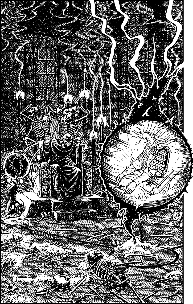

105
When the dial clicks into position, 10 the heavy wooden doors swing open and a gust of putrid air makes you swallow hard before you take your first cautious step into the hall beyond. You cast a suspicious eye around this circular chamber for it is illuminated by tall candles that radiate a cold, cyanic light. The floor is strewn with bones and human cadavers in varying states of decomposition, and the walls are hung with great silken tapestries depicting horrific scenes that glorify the power of death and decay.
As your eagle eyes penetrate the gloom, your pulse races when they fall upon Lone Wolf. He sits cross-legged within a sphere of translucent grey light that hovers three feet above the floor. His divine blade, Sommerswerd, is cradled in his lap, and his head hangs limply against his chest. At first you believe he is unconscious; then your Magnakai Discipline of Psi-screen detects that he is engaged in a desperate mental battle against a host of invisible enemies who are seeking to enslave his soul.

The shadowy prison-sphere that entraps Lone Wolf hovers before a vile throne constructed entirely of human skulls and bones. Seated here is a thin man attired in black robes edged with gold and scarlet braid. His pale skin and feverish dark eyes are touched by the bluish glow of the surrounding candles, accentuating his sinister mien. With an extended right hand he grasps the surface of a large crystal sphere that is fixed to a pedestal beside his throne. This crystal is hollow, but its core is filled with swirling black vapours that radiate a deathly chill. The robed man stares fixedly at the sphere and appears to be mesmerized by it. You magnify your vision, and when you focus your gaze upon the sphere, suddenly you fathom the secret of the terrible power contained within.
Footnotes
[10] This is the correct answer to the combination lock in Sections 11 and 300.